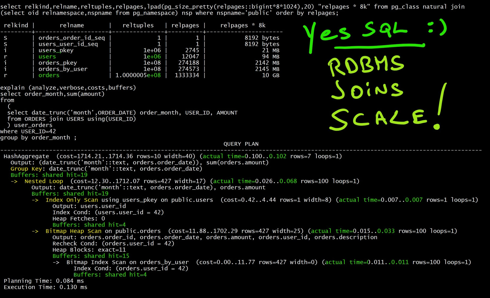

This was first published on https://www.dbi-services.com/blog/the-myth-of-nosql-vs-rdbms-joins-dont-scale/ (2020-07-05)
Republishing here for new followers. The content is related to the versions available at the publication date.
.
I’ll reference Alex DeBrie article “SQL, NoSQL, and Scale: How DynamoDB scales where relational databases don’t“, especially the paragraph about “Why relational databases don’t scale”. But I want to make clear that my post here is not against this article, but against a very common myth that even precedes NoSQL databases. Actually, I’m taking this article as reference because the author, in his website and book, has really good points about data modeling in NoSQL. And because AWS DynamoDB is probably the strongest NoSQL database today. I’m challenging some widespread assertions and better do it based on good quality content and product.
There are many use cases where NoSQL is a correct alternative, but moving from a relational database system to a key-value store because you heard that “joins don’t scale” is probably not a good reason. You should choose a solution for the features it offers (the problem it solves), and not because you ignore what you current platform is capable of.
The idea in this article, taken from the popular Rick Houlihan talk, is that, by joining tables, you read more data. And that it is a CPU intensive operation. And the time complexity of joins is “( O (M + N) ) or worse” according to Alex DeBrie article or “O(log(N))+Nlog(M)” according to Rick Houlihan slide. This makes reference to “time complexity” and “Big O” notation. You can read about it. But this supposes that the cost of a join depends on the size of the tables involved (represented by N and M). That would be right with non-partitioned table full scan. But all relational databases come with B*Tree indexes. And when we compare to a key-value store we are obviously retrieving few rows and the join method will be a Nested Loop with Index Range Scan. This access method is actually not dependent at all on the size of the tables. That’s why relational database are the king of OTLP applications.
The article claims that “there’s one big problem with relational databases: performance is like a black box. There are a ton of factors that impact how quickly your queries will return.” with an example on a query like: “SELECT * FROM orders JOIN users ON … WHERE user.id = … GROUP BY … LIMIT 20”. It says that “As the size of your tables grow, these operations will get slower and slower.”
I will build those tables, in PostgreSQL here, because that’s my preferred Open Source RDBMS, and show that:
I will create small tables here. Because when reading the execution plan, I don’t need large tables to estimate the cost and the response-time scalability. You can run the same with larger tables if you want to see how it scales. And then maybe investigate further the features for big tables (partitioning, parallel query,…). But let’s start with very simple tables without specific optimization.
\timing
create table USERS ( USER_ID bigserial primary key, FIRST_NAME text, LAST_NAME text)
;
CREATE TABLE
create table ORDERS ( ORDER_ID bigserial primary key, ORDER_DATE timestamp, AMOUNT numeric(10,2), USER_ID bigint, DESCRIPTION text)
;I have created the two tables that I’ll join. Both with an auto-generated primary key for simplicity.
It is important to build the table as they would be in real life. USERS probably come without specific order. ORDERS come by date. This means that ORDERS from one USER are scattered throughout the table. The query would be much faster with clustered data, and each RDBMS has some ways to achieve this, but I want to show the cost of joining two tables here without specific optimisation.
insert into USERS (FIRST_NAME, LAST_NAME)
with
random_words as (
select generate_series id,
translate(md5(random()::text),'-0123456789','aeioughij') as word
from generate_series(1,100)
)
select
words1.word ,words2.word
from
random_words words1
cross join
random_words words2
order by words1.id+words2.id
;
INSERT 0 10000
Time: 28.641 ms
select * from USERS order by user_id fetch first 10 rows only;
user_id | first_name | last_name
---------+--------------------------------+--------------------------------
1 | iooifgiicuiejiaeduciuccuiogib | iooifgiicuiejiaeduciuccuiogib
2 | iooifgiicuiejiaeduciuccuiogib | dgdfeeiejcohfhjgcoigiedeaubjbg
3 | dgdfeeiejcohfhjgcoigiedeaubjbg | iooifgiicuiejiaeduciuccuiogib
4 | ueuedijchudifefoedbuojuoaudec | iooifgiicuiejiaeduciuccuiogib
5 | iooifgiicuiejiaeduciuccuiogib | ueuedijchudifefoedbuojuoaudec
6 | dgdfeeiejcohfhjgcoigiedeaubjbg | dgdfeeiejcohfhjgcoigiedeaubjbg
7 | iooifgiicuiejiaeduciuccuiogib | jbjubjcidcgugubecfeejidhoigdob
8 | jbjubjcidcgugubecfeejidhoigdob | iooifgiicuiejiaeduciuccuiogib
9 | ueuedijchudifefoedbuojuoaudec | dgdfeeiejcohfhjgcoigiedeaubjbg
10 | dgdfeeiejcohfhjgcoigiedeaubjbg | ueuedijchudifefoedbuojuoaudec
(10 rows)
Time: 0.384 ms
This generated 10000 users in the USERS table with random names.
insert into ORDERS ( ORDER_DATE, AMOUNT, USER_ID, DESCRIPTION)
with
random_amounts as (
------------> this generates 10 random order amounts
select
1e6*random() as AMOUNT
from generate_series(1,10)
)
,random_dates as (
------------> this generates 10 random order dates
select
now() - random() * interval '1 year' as ORDER_DATE
from generate_series(1,10)
)
select ORDER_DATE, AMOUNT, USER_ID, md5(random()::text) DESCRIPTION from
random_dates
cross join
random_amounts
cross join
users
order by ORDER_DATE
------------> I sort this by date because that's what happens in real life. Clustering by users would not be a fair test.
;
INSERT 0 1000000
Time: 4585.767 ms (00:04.586)
I have now one million orders generated as 100 orders for each users in the last year. You can play with the numbers to generate more and see how it scales. This is fast: 5 seconds to generate 1 million orders here, and there are many way to load faster if you feel the need to test on very large data sets. But the point is not there.
create index ORDERS_BY_USER on ORDERS(USER_ID);
CREATE INDEX
Time: 316.322 ms
alter table ORDERS add constraint ORDERS_BY_USER foreign key (USER_ID) references USERS;
ALTER TABLE
Time: 194.505 ms
As, in my data model, I want to navigate from USERS to ORDERS I add an index for it. And I declare the referential integrity to avoid logical corruptions in case there is a bug in my application, or a human mistake during some ad-hoc fixes. As soon as the constraint is declared, I have no need to check this assertion in my code anymore. The constraint also informs the query planner know about this one-to-many relationship as it may open some optimizations. That’s the relational database beauty: we declare those things rather than having to code their implementation.
vacuum analyze;
VACUUM
Time: 429.165 ms
select version();
version
---------------------------------------------------------------------------------------------------------
PostgreSQL 12.3 on x86_64-pc-linux-gnu, compiled by gcc (GCC) 4.8.5 20150623 (Red Hat 4.8.5-39), 64-bit
(1 row)
I’m in PostgreSQL, version 12, on a Linux box with 2 CPUs only. I’ve run a manual VACUUM to get a reproducible testcase rather than relying on autovacuum kicking-in after those table loading.
select relkind,relname,reltuples,relpages,lpad(pg_size_pretty(relpages::bigint*8*1024),20) "relpages * 8k" from pg_class natural join (select oid relnamespace,nspname from pg_namespace) nsp where nspname='public' order by relpages;
relkind | relname | reltuples | relpages | relpages * 8k
---------+---------------------+-----------+----------+----------------------
S | orders_order_id_seq | 1 | 1 | 8192 bytes
S | users_user_id_seq | 1 | 1 | 8192 bytes
i | users_pkey | 10000 | 30 | 240 kB
r | users | 10000 | 122 | 976 kB
i | orders_pkey | 1e+06 | 2745 | 21 MB
i | orders_by_user | 1e+06 | 2749 | 21 MB
r | orders | 1e+06 | 13334 | 104 MB
Here are the sizes of my tables: The 1 million orders take 104MB and the 10 thousand users is 1MB. I’ll increase it later, but I don’t need this to understand the performance predictability.
When understanding the size, remember that the size of the table is only the size of data. Metadata (like column names) are not repeated for each row. They are stored once in the RDBMS catalog describing the table. As PostgreSQL has a native JSON datatype you can also test with a non-relational model here.
select order_month,sum(amount),count(*)
from
(
select date_trunc('month',ORDER_DATE) order_month, USER_ID, AMOUNT
from ORDERS join USERS using(USER_ID)
) user_orders
where USER_ID=42
group by order_month
;
order_month | sum | count
---------------------+-------------+-------
2019-11-01 00:00:00 | 5013943.57 | 10
2019-09-01 00:00:00 | 5013943.57 | 10
2020-04-01 00:00:00 | 5013943.57 | 10
2019-08-01 00:00:00 | 15041830.71 | 30
2020-02-01 00:00:00 | 10027887.14 | 20
2020-06-01 00:00:00 | 5013943.57 | 10
2019-07-01 00:00:00 | 5013943.57 | 10
(7 rows)
Time: 2.863 ms
Here is the query mentioned in the article: get all orders for one user, and do some aggregation on them. Looking at the time is not really interesting as it depends on the RAM to cache the buffers at database or filesystem level, and disk latency. But we are developers and, by looking at the operations and loops that were executed, we can understand how it scales and where we are in the “time complexity” and “Big O” order of magnitude.
This is as easy as running the query with EXPLAIN:
explain (analyze,verbose,costs,buffers)
select order_month,sum(amount)
from
(
select date_trunc('month',ORDER_DATE) order_month, USER_ID, AMOUNT
from ORDERS join USERS using(USER_ID)
) user_orders
where USER_ID=42
group by order_month
;
QUERY PLAN
------------------------------------------------------------------------------------------------------------------------------------------------
GroupAggregate (cost=389.34..390.24 rows=10 width=40) (actual time=0.112..0.136 rows=7 loops=1)
Output: (date_trunc('month'::text, orders.order_date)), sum(orders.amount)
Group Key: (date_trunc('month'::text, orders.order_date))
Buffers: shared hit=19
-> Sort (cost=389.34..389.59 rows=100 width=17) (actual time=0.104..0.110 rows=100 loops=1)
Output: (date_trunc('month'::text, orders.order_date)), orders.amount
Sort Key: (date_trunc('month'::text, orders.order_date))
Sort Method: quicksort Memory: 32kB
Buffers: shared hit=19
-> Nested Loop (cost=5.49..386.02 rows=100 width=17) (actual time=0.022..0.086 rows=100 loops=1)
Output: date_trunc('month'::text, orders.order_date), orders.amount
Buffers: shared hit=19
-> Index Only Scan using users_pkey on public.users (cost=0.29..4.30 rows=1 width=8) (actual time=0.006..0.006 rows=1 loops=1)
Output: users.user_id
Index Cond: (users.user_id = 42)
Heap Fetches: 0
Buffers: shared hit=3
-> Bitmap Heap Scan on public.orders (cost=5.20..380.47 rows=100 width=25) (actual time=0.012..0.031 rows=100 loops=1)
Output: orders.order_id, orders.order_date, orders.amount, orders.user_id, orders.description
Recheck Cond: (orders.user_id = 42)
Heap Blocks: exact=13
Buffers: shared hit=16
-> Bitmap Index Scan on orders_by_user (cost=0.00..5.17 rows=100 width=0) (actual time=0.008..0.008 rows=100 loops=1)
Index Cond: (orders.user_id = 42)
Buffers: shared hit=3
Planning Time: 0.082 ms
Execution Time: 0.161 ms
Here is the execution plan with the execution statistics. We have read 3 pages from USERS to get our USER_ID (Index Only Scan) and navigated, with Nested Loop, to ORDERS and get the 100 orders for this user. This has read 3 pages from the index (Bitmap Index Scan) and 13 pages from the table. That’s a total of 19 pages. Those pages are 8k blocks.
Let’s increase the size of the tables by a factor 4. I change the “generate_series(1,100)” to “generate_series(1,200)” in the USERS generations and run the same. That generates 40000 users and 4 million orders.
select relkind,relname,reltuples,relpages,lpad(pg_size_pretty(relpages::bigint*8*1024),20) "relpages * 8k" from pg_class natural join (select
oid relnamespace,nspname from pg_namespace) nsp where nspname='public' order by relpages;
relkind | relname | reltuples | relpages | relpages * 8k
---------+---------------------+--------------+----------+----------------------
S | orders_order_id_seq | 1 | 1 | 8192 bytes
S | users_user_id_seq | 1 | 1 | 8192 bytes
i | users_pkey | 40000 | 112 | 896 kB
r | users | 40000 | 485 | 3880 kB
i | orders_pkey | 4e+06 | 10969 | 86 MB
i | orders_by_user | 4e+06 | 10985 | 86 MB
r | orders | 3.999995e+06 | 52617 | 411 MB
explain (analyze,verbose,costs,buffers)
select order_month,sum(amount)
from
(
select date_trunc('month',ORDER_DATE) order_month, USER_ID, AMOUNT
from ORDERS join USERS using(USER_ID)
) user_orders
where USER_ID=42
group by order_month
;
explain (analyze,verbose,costs,buffers)
select order_month,sum(amount)
from
(
select date_trunc('month',ORDER_DATE) order_month, USER_ID, AMOUNT
from ORDERS join USERS using(USER_ID)
) user_orders
where USER_ID=42
group by order_month
;
QUERY PLAN
------------------------------------------------------------------------------------------------------------------------------------------------
GroupAggregate (cost=417.76..418.69 rows=10 width=40) (actual time=0.116..0.143 rows=9 loops=1)
Output: (date_trunc('month'::text, orders.order_date)), sum(orders.amount)
Group Key: (date_trunc('month'::text, orders.order_date))
Buffers: shared hit=19
-> Sort (cost=417.76..418.02 rows=104 width=16) (actual time=0.108..0.115 rows=100 loops=1)
Output: (date_trunc('month'::text, orders.order_date)), orders.amount
Sort Key: (date_trunc('month'::text, orders.order_date))
Sort Method: quicksort Memory: 32kB
Buffers: shared hit=19
-> Nested Loop (cost=5.53..414.27 rows=104 width=16) (actual time=0.044..0.091 rows=100 loops=1)
Output: date_trunc('month'::text, orders.order_date), orders.amount
Buffers: shared hit=19
-> Index Only Scan using users_pkey on public.users (cost=0.29..4.31 rows=1 width=8) (actual time=0.006..0.007 rows=1 loops=1)
Output: users.user_id
Index Cond: (users.user_id = 42)
Heap Fetches: 0
Buffers: shared hit=3
-> Bitmap Heap Scan on public.orders (cost=5.24..408.66 rows=104 width=24) (actual time=0.033..0.056 rows=100 loops=1)
Output: orders.order_id, orders.order_date, orders.amount, orders.user_id, orders.description
Recheck Cond: (orders.user_id = 42)
Heap Blocks: exact=13
Buffers: shared hit=16
-> Bitmap Index Scan on orders_by_user (cost=0.00..5.21 rows=104 width=0) (actual time=0.029..0.029 rows=100 loops=1)
Index Cond: (orders.user_id = 42)
Buffers: shared hit=3
Planning Time: 0.084 ms
Execution Time: 0.168 ms
(27 rows)
Time: 0.532 ms
Look how we scaled here: I multiplied the size of the tables by 4x and I have exactly the same cost: 3 pages from each index and 13 from the table. This is the beauty of B*Tree: the cost depends only on the height of the tree and not the size of the table. And you can increase the table exponentially before the height of the index increases.
Let’s go further and x4 the size of the tables again. I run with “generate_series(1,400)” in the USERS generations and run the same. That generates 160 thousand users and 16 million orders.
select relkind,relname,reltuples,relpages,lpad(pg_size_pretty(relpages::bigint*8*1024),20) "relpages * 8k" from pg_class natural join (select
oid relnamespace,nspname from pg_namespace) nsp where nspname='public' order by relpages;
relkind | relname | reltuples | relpages | relpages * 8k
---------+---------------------+--------------+----------+----------------------
S | orders_order_id_seq | 1 | 1 | 8192 bytes
S | users_user_id_seq | 1 | 1 | 8192 bytes
i | users_pkey | 160000 | 442 | 3536 kB
r | users | 160000 | 1925 | 15 MB
i | orders_pkey | 1.6e+07 | 43871 | 343 MB
i | orders_by_user | 1.6e+07 | 43935 | 343 MB
r | orders | 1.600005e+07 | 213334 | 1667 MB
explain (analyze,verbose,costs,buffers)
select order_month,sum(amount)
from
(
select date_trunc('month',ORDER_DATE) order_month, USER_ID, AMOUNT
from ORDERS join USERS using(USER_ID)
) user_orders
where USER_ID=42
group by order_month
;
QUERY PLAN
------------------------------------------------------------------------------------------------------------------------------------------------
GroupAggregate (cost=567.81..569.01 rows=10 width=40) (actual time=0.095..0.120 rows=8 loops=1)
Output: (date_trunc('month'::text, orders.order_date)), sum(orders.amount)
Group Key: (date_trunc('month'::text, orders.order_date))
Buffers: shared hit=21
-> Sort (cost=567.81..568.16 rows=140 width=17) (actual time=0.087..0.093 rows=100 loops=1)
Output: (date_trunc('month'::text, orders.order_date)), orders.amount
Sort Key: (date_trunc('month'::text, orders.order_date))
Sort Method: quicksort Memory: 32kB
Buffers: shared hit=21
-> Nested Loop (cost=6.06..562.82 rows=140 width=17) (actual time=0.026..0.070 rows=100 loops=1)
Output: date_trunc('month'::text, orders.order_date), orders.amount
Buffers: shared hit=21
-> Index Only Scan using users_pkey on public.users (cost=0.42..4.44 rows=1 width=8) (actual time=0.007..0.007 rows=1 loops=1)
Output: users.user_id
Index Cond: (users.user_id = 42)
Heap Fetches: 0
Buffers: shared hit=4
-> Bitmap Heap Scan on public.orders (cost=5.64..556.64 rows=140 width=25) (actual time=0.014..0.035 rows=100 loops=1)
Output: orders.order_id, orders.order_date, orders.amount, orders.user_id, orders.description
Recheck Cond: (orders.user_id = 42)
Heap Blocks: exact=13
Buffers: shared hit=17
-> Bitmap Index Scan on orders_by_user (cost=0.00..5.61 rows=140 width=0) (actual time=0.010..0.010 rows=100 loops=1)
Index Cond: (orders.user_id = 42)
Buffers: shared hit=4
Planning Time: 0.082 ms
Execution Time: 0.159 ms
Yes, by increasing the table size a lot the index may have to split the root block to add a new branch level. The consequence is minimal: two additional pages to read here. The additional execution time is in tens of microseconds when cached in RAM, up to milliseconds if from mechanical disk. With 10x or 100x larger tables, you will do some physical I/O and only the top index branches will be in memory. You can expect about about 20 I/O calls then. With SSD on Fiber Channel (like with AWS RDS PostgreSQL for example), this will still be in single-digit millisecond. The cheapest AWS EBS Provisioned IOPS for RDS is 1000 IOPS then you can estimate the number of queries per second you can run. The number of pages here (“Buffers”) is the right metric to estimate the cost of the query. To be compared with DynamoDB RCU.
Last test for me, but you can go further, I change to “generate_series(1,800)” in the USERS generations and run the same. That generates 640 thousand users and 64 million orders.
select relkind,relname,reltuples,relpages,lpad(pg_size_pretty(relpages::bigint*8*1024),20) "relpages * 8k" from pg_class natural join (select
oid relnamespace,nspname from pg_namespace) nsp where nspname='public' order by relpages;
relkind | relname | reltuples | relpages | relpages * 8k
---------+---------------------+---------------+----------+----------------------
S | orders_order_id_seq | 1 | 1 | 8192 bytes
S | users_user_id_seq | 1 | 1 | 8192 bytes
i | users_pkey | 640000 | 1757 | 14 MB
r | users | 640000 | 7739 | 60 MB
i | orders_pkey | 6.4e+07 | 175482 | 1371 MB
i | orders_by_user | 6.4e+07 | 175728 | 1373 MB
r | orders | 6.4000048e+07 | 853334 | 6667 MB
explain (analyze,verbose,costs,buffers)
select order_month,sum(amount)
from
(
select date_trunc('month',ORDER_DATE) order_month, USER_ID, AMOUNT
from ORDERS join USERS using(USER_ID)
) user_orders
where USER_ID=42
group by order_month
;
QUERY PLAN
------------------------------------------------------------------------------------------------------------------------------------------
HashAggregate (cost=1227.18..1227.33 rows=10 width=40) (actual time=0.102..0.105 rows=7 loops=1)
Output: (date_trunc('month'::text, orders.order_date)), sum(orders.amount)
Group Key: date_trunc('month'::text, orders.order_date)
Buffers: shared hit=23
-> Nested Loop (cost=7.36..1225.65 rows=306 width=17) (actual time=0.027..0.072 rows=100 loops=1)
Output: date_trunc('month'::text, orders.order_date), orders.amount
Buffers: shared hit=23
-> Index Only Scan using users_pkey on public.users (cost=0.42..4.44 rows=1 width=8) (actual time=0.007..0.008 rows=1 loops=1)
Output: users.user_id
Index Cond: (users.user_id = 42)
Heap Fetches: 0
Buffers: shared hit=4
-> Bitmap Heap Scan on public.orders (cost=6.94..1217.38 rows=306 width=25) (actual time=0.015..0.037 rows=100 loops=1)
Output: orders.order_id, orders.order_date, orders.amount, orders.user_id, orders.description
Recheck Cond: (orders.user_id = 42)
Heap Blocks: exact=15
Buffers: shared hit=19
-> Bitmap Index Scan on orders_by_user (cost=0.00..6.86 rows=306 width=0) (actual time=0.011..0.011 rows=100 loops=1)
Index Cond: (orders.user_id = 42)
Buffers: shared hit=4
Planning Time: 0.086 ms
Execution Time: 0.134 ms
(22 rows)
Time: 0.521 ms
You see how the cost increases slowly, with two additional pages to read here.
Please, test with more rows. When looking at the time (less than 1 millisecond), keep in mind that it is CPU time here as all pages are in memory cache. On purpose, because the article mentions CPU and RAM (“joins require a lot of CPU and memory”). Anyway, 20 disk reads will still be within the millisecond on modern storage.

Let’s get back to the “Big O” notation. We are definitely not “O (M + N)”. This would have been without any index, where all pages from all tables would have been full scanned. Any database maintains hashed or sorted structures to improve high selectivity queries. This has nothing to do with SQL vs. NoSQL or with RDBMS vs. Hierarchichal DB. In DynamoDB this structure on primary key is HASH partitioning (and additional sorting). In RDBMS the most common structure is a sorted index (with the possibility of additional partitioning, zone maps, clustering,…). We are not in “O(log(N))+Nlog(M)” but more like “O(log(N))+log(M)” because the size of the driving table (N) has nothing to do on the inner loop cost. The first filtering, the one with “O(log(N))”, has filtered out those N rows. Using “N” and ignoring the outer selectivity is a mistake. Anyway, this O(log) for B*Tree is really scalable as we have seen because the base of this log() function is really small (thanks to large branch blocks – 8KB).
Anyway, the point is not there. As you have seen, the cost of Nested Loop is in the blocks that are fetched from the inner loop, and this depends on the selectivity and the clustering factor (the table physical order correlation with the index order), and some prefetching techniques. This O(log) for going through the index is often insignificant on Range Scans.
If you have a database size that is several order of magnitude from those million rows, and where this millisecond latency is a problem, the major RDBMS offer many features and structures to go further in performance and predictability of response time. As we have seen, the cost of this query is not about Index, Nested Loop or Group By. It is about the scattered items: ingested by date but queried by user.
Through its 40 years of optimizing OLTP applications, the Oracle Database have a lot of features, with their popularity depending on the IT trends. From the first versions, in the 80’s, because the hierarchical databases were still in people’s mind, and the fear of “joins are expensive” was already there, Oracle has implemented a structure to store the tables together, pre-joined. This is called CLUSTER. It was, from the beginning, indexed with a sorted structure (INDEX CLUSTER) or a hashed structure (HASH CLUSTER). Parallel Query was quickly implemented to scale-up and, with Parallel Server now known as RAC, to scale-out. Partitioning was introduced to scale further, again with sorted (PARTITION by RANGE) or hashed (PARTITION BY HASH) segments. This can scale further the index access (LOCAL INDEX with partition pruning). And it also scales joins (PARTITION-WISE JOIN) to reduce CPU and RAM to join large datasets. When more agility was needed, B*Tree sorted structures were the winner and Index Organized Tables were introduced to cluster data (to avoid the most expensive operation as we have seen in the examples above). But Heap Tables and B*Tree are still the winners given their agility and because the Join operations were rarely a bottleneck. Currently, partitioning has improved (even scaling horizontally beyond the clusters with sharding), as well as data clustering (Attribute Clustering, Zone Maps and Storage Index). And there’s always the possibility for Index Only access, just by adding more columns to the index, removing the major cost of table access. And materialized views can also act as pre-built join index and will also reduce the CPU and RAM required for GROUP BY aggregation.
I listed a lot of Oracle features, but Microsoft SQL Server has also many similar features. Clustered tables, covering indexes, Indexed Views, and of course partitioning. Open source databases are evolving a lot. PostgreSQL has partitioning, parallel query, clustering,.. Still Open Source, you can web-scale it to a distributed database with YugabyteDB. MySQL is evolving a lot recently. I’ll not list all databases and all features. You can port the testcase to other databases easily.
Oh, and by the way, if you want to test it on Oracle Database you will quickly realize that the query from the article may not even do any Join operation. Because when you query with the USER_ID you probably don’t need to get back to the USERS table. And thanks to the declared foreign key, the optimizer knows that the join is not necessary: https://dbfiddle.uk/?rdbms=oracle_18&fiddle=a5afeba2fdb27dec7533545ab0a6eb0e.
NoSQL databases are good for many use-cases. But remember that it is a key-value optimized data store. When you start to split a document into multiple entities with their own keys, remember that relational databases were invented for that. I blogged about another myth recently: The myth of NoSQL (vs. RDBMS) agility: adding attributes. All feedback welcome, here or on Twitter:
A new blog post on another myth in NoSQL vs. RDBMS:
“joins dont scale”https://t.co/u4aBE4HXb7— Franck Pachot (@FranckPachot) July 5, 2020
And Twitter has also Alex DeBrie interesting thoughts about it:
Franck Pachot (@FranckPachot ) is an RDBMS expert and wrote a really nice response to an earlier post I wrote about how DynamoDB scales where relational databases don't. I highly recommend reading it.
Link below, with 3 thoughts from me to follow.https://t.co/DjOK3RWJZc
— Alex DeBrie (@alexbdebrie) July 8, 2020